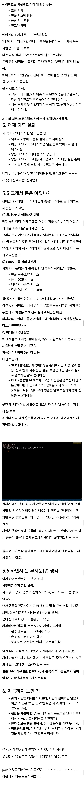
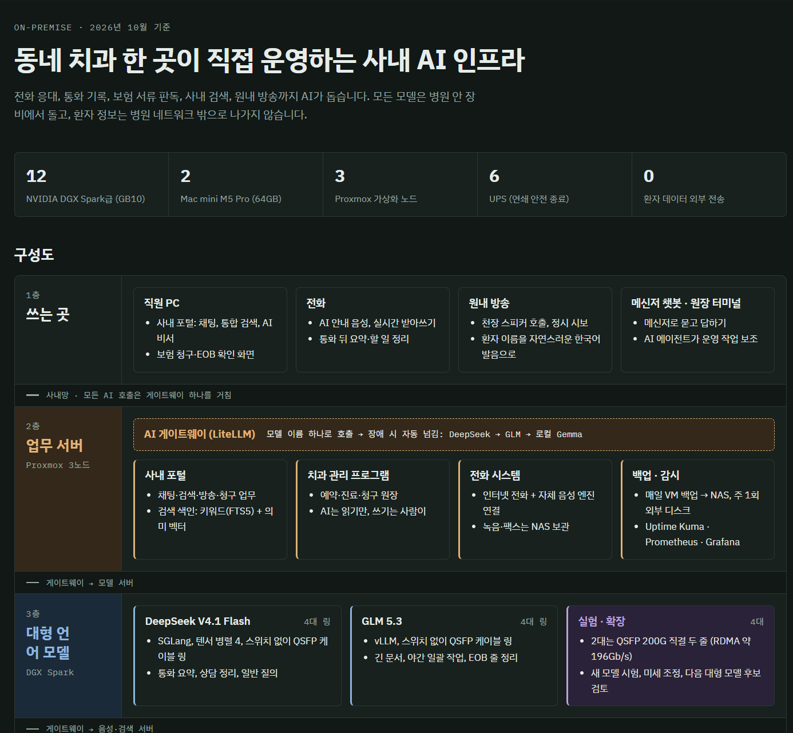
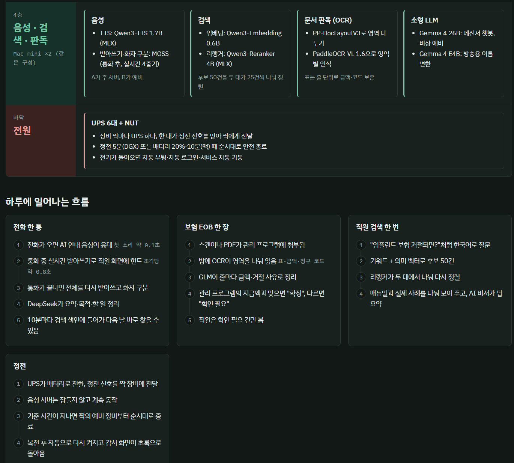
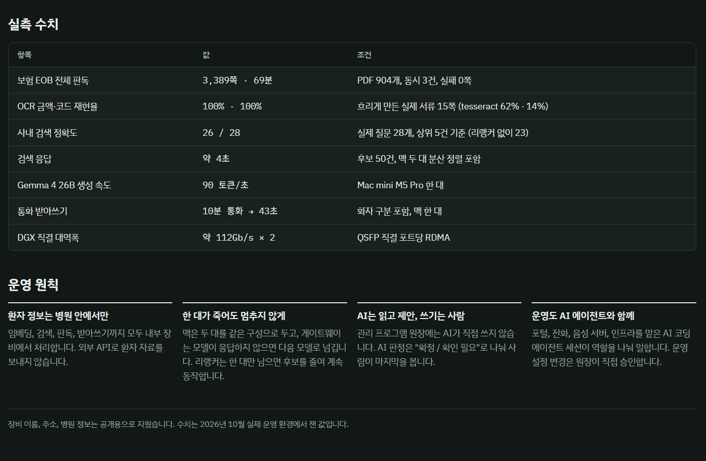

카톡에 누가 올렸길래 가져옴




카톡에 누가 올렸길래 가져옴
본문보고 와 대단한 치과의사네 했다가 댓보니 저것조차 ai가 쓴글이라고? ㅋㅋㅋㅋㅋㅋㅋ 개놀램 ㅋㅋㅋ
ㄷㄷ
아니 갑자기 급발진 뭔데 ㅋㅋㅋㅋㅋ
랜선 공사하고 일반 데탑 포맷 윈도우,드라이버설치 치과 관련 프로그램 설치만 해도 양반일듯
영포티가 글을 AI한테 맡기면 글에서도 영포티 냄새가 나는구나
뽐뿌같은데 가보면 누가봐도 ㅈㄴ 열심히 고민해서 하나하나 사모은게 뻔한데
정신차려보니 홀린듯이 나도모르게 샀다 만들었다 돼있었다 ㅇㅈㄹ 하는 새끼들 넘쳐나던데
참 이런거 보면 DT/AX 는 작은 조직에서 잘 먹혀
큰 대기업 상대로 AX 하면 정보보안부서가 처음에 개지랄 해서 다 맞춰줌
그러면 DT팀이 넘겨 받아서 운영 하는데 이거저거 왜 안돼요 CS 존나게 올라와서 또 변경
그러면 가끔씩 정보보안 와서 지랄해서 또 뭐 변경
이거 2-3번 하면 이게 AX 인지 뭔지 흉물스러운거 만들어 지고 걍 처음 기대한 효율은 없고 일만 늘어나있음
이게 사무직의 본질임
거 상 쳐 키 라 고
재밌네 근데 온전히 취미영역이고 투자비용 회수하긴 어려울듯ㅋㅋ
코딩쟁이들 발작하는게 웃음포인트임 ㅋㅋ 무슨 비효율적, 솔루션팔이 광고, 왜 함? 이러고 비하하는데 실제로 업무하는 입장에선 뭐 하나라도 대체되면 편한거임 비용절감도 되면 개이득이고
원래는 전산팀이나 외주업체 쓰는거아니면 불가능했던 업무들이 바이브코딩으로 다 해결되는데 안할 이유가 없잖아? 이제 좀 있음 소프트웨어 외주업체는 사실상 보안이 필수라 강제로 써야하는 곳말곤 살아남는곳 없어질거임
이 글에 나오는것도 어려울거 진짜 1도 없다 걍 클로드나 지피티한테 아이디어 던져주면 실행계획부터 구체적 실행까지 다 짜줌 프로그래밍은 1도 모르지만 내 업무는 코딩쟁이들보다 100배는 잘 아니 나 맞춤 프로그램 하나씩 만드는게 진짜 차이 존나큼